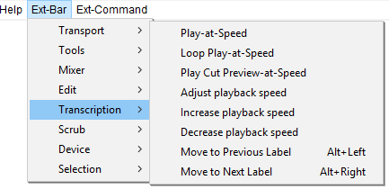

Ext-Bar Menu: Transcription
The Ext-Bar > Transcription Menu provides commands for manipulating the Transcription Toolbar and for moving between labels.
- Click, or hover, on any menu item in the image to read about that command. Skip the image
- 
Play-at-Speed
Play audio at a faster or slower speed
Loop Play-at-Speed
Combines looped play and play at speed
Play Cut Preview-at-Speed
Combines cut preview and play at speed
Adjust playback speed
Displays the Playback Speed dialog. You can type a new value for the playback volume (between 0 and 1), or press Tab, then use the left and right arrow keys to adjust the slider.
Increase playback speed
Each key press will increase the playback speed by 0.1.
Decrease playback speed
Each key press will decrease the playback speed by 0.1.
Move to Previous Label Alt+Left
Moves selection to the previous label.
Move to Next Label Alt+Right
Moves selection to the next label.